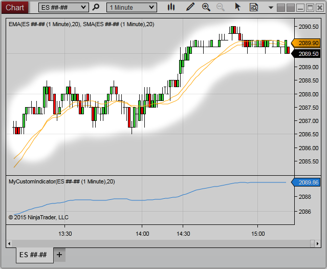

|
<< Click to Display Table of Contents >> ChartBars |


|
ChartBars
|
<< Click to Display Table of Contents >> ChartBars |
|
The ChartBars class provides GUI access related methods and properties to the primary bars series configured on the Chart through the Data Series menu. For data access information related to the NinjaScript input's bars series, please use the Bars Series object (or the BarsArray for multi-series input)
Note: A ChartBars object will ONLY exist should the hosting NinjaScript type be loaded through a Chart. For example, a Strategy would have access to a ChartBars property when running on a Chart, but would NOT when loaded through the Strategies Grid or Strategy analyzer. |

Warning: It is crucial to check for object references before accessing the ChartBars otherwise possible null reference errors can be expected depending on where the NinjaScript object was started. See example below |
Data returned from the historical data repository. |
|
The total number of ChartBars that exist on the chart |
|
An index value representing the first bar painted on the chart. |
|
An ChartBar index value calculated from a time value on the chart. |
|
Returns the ChartBar index value at a specified x-coordinate relative to the ChartControl. |
|
The ChartBars time value calculated from a bar index value on the chart. |
|
The Panel index value that the ChartBars eside. |
|
Various ChartBar properties that have been configured from the Chart's Data Series menu. |
|
A string formatted for the Chart's Data Series Label as well as the period. |
|
An index value representing the last bar painted on the chart. |
Example
protected override void OnStateChange() |